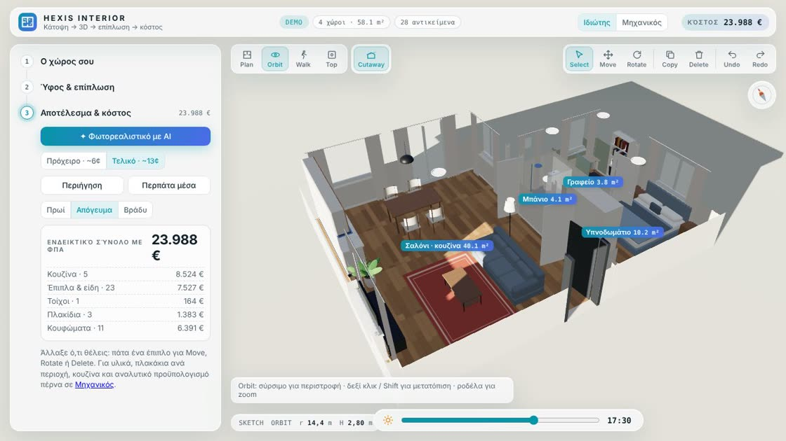
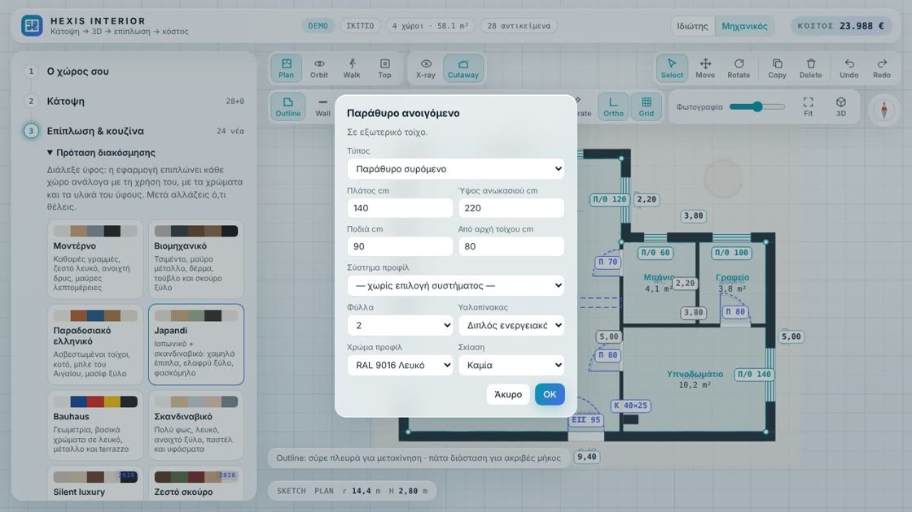
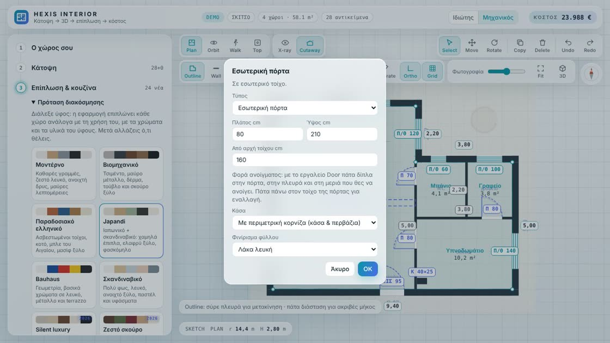
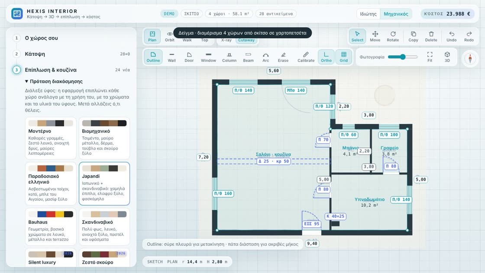
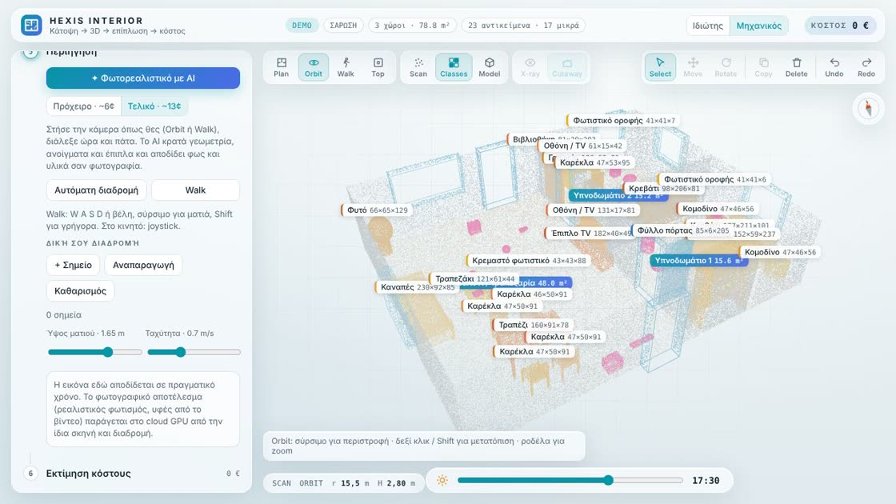
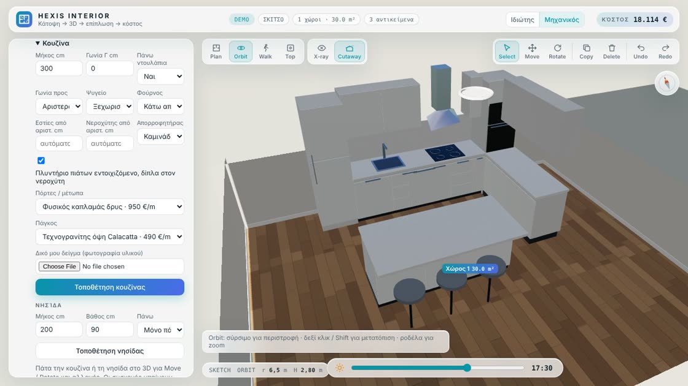
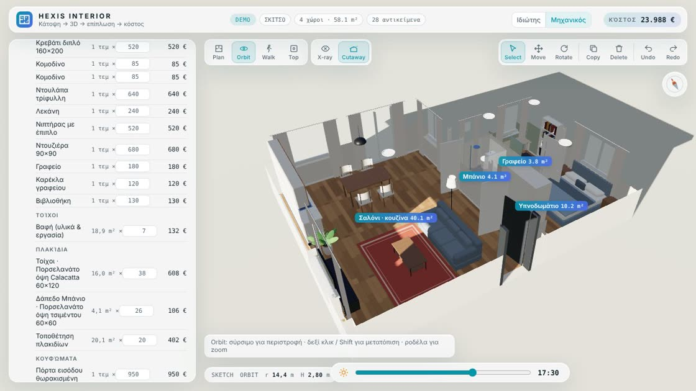
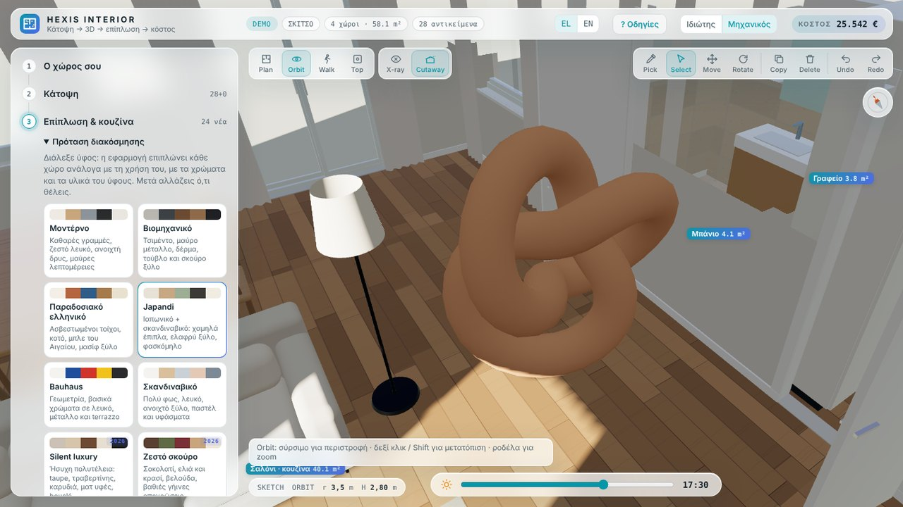

Οδηγός χρήσης
Σχεδιασμός εσωτερικού χώρου σε πραγματικές διαστάσεις: κάτοψη, τρισδιάστατο μοντέλο, επίπλωση, υλικά, κουφώματα και επιμέτρηση σε ενιαίο περιβάλλον. Τα βίντεο παίζουν σε επανάληψη· πάτα πάνω τους για παύση. Το ↓ PDF κατεβάζει τον οδηγό για μελέτη, με ενεργά βίντεο.
1Ιδιώτης ή Μηχανικός
Ο διακόπτης πάνω δεξιά αλλάζει όσα εργαλεία βλέπεις. Τα έργα και τα σχέδια μένουν ίδια· η επιλογή σου θυμάται.
- 3 βήματα: χώρος, ύφος & υλικά, αποτέλεσμα
- Pick και υλικά εμπορίου, όπως ο Μηχανικός
- Σύνολο κόστους ανά ομάδα
- Πρωί, απόγευμα, βράδυ με ένα πάτημα
- Σάρωση, X-ray, Calibrate
- Υλικά ανά περιοχή τοίχου, κουζίνα, κουφώματα
- Αναλυτικός προϋπολογισμός με δικές σου τιμές

2Νέο έργο · περίγραμμα
- Η εφαρμογή ανοίγει σε κενό έργο, στο Outline. Για να δοκιμάσεις κάτι έτοιμο, πάτα Δείγμα.
- Πάτα τις γωνίες της κάτοψης με τη σειρά. Κλείνεις το περίγραμμα πατώντας ξανά την πρώτη γωνία ή Enter.
- Πάτα μια διάσταση (π.χ. 9,40) και γράψε το πραγματικό μήκος. Η απέναντι πλευρά προσαρμόζεται.
- Σύρε μια πλευρά για να τη μετακινήσεις. Undo / Redo είναι πάντα πάνω δεξιά.
Στο βήμα 1 ορίζεις ύψος ορόφου και πάχος εξωτερικών και εσωτερικών τοίχων πριν από το 3D.
3Τοίχοι, κουφώματα, πόρτες
- Wall: πάτα αρχή και τέλος για εσωτερικό τοίχο. Κουμπώνει σε γωνίες και τοίχους.
- Window: πάτα πάνω σε τοίχο. Η εφαρμογή ρωτά τύπο: παράθυρο ανοιγόμενο, ανακλινόμενο, συρόμενο, σταθερό, ή μπαλκονόπορτα ανοιγόμενη, συρόμενη, ανυψούμενη ή minimal.
- Στο ίδιο παράθυρο διαλέγεις σύστημα προφίλ (ALUMIL, EUROPA, ELVIAL), φύλλα, υαλοπίνακα, χρώμα RAL, ανοδίωση ή ξυλομίμηση, και σκίαση.
- Door: για εσωτερική πόρτα ρωτά αν θα έχει περιμετρική κορνίζα (κάσα και περβάζια) ή θα είναι χωρίς, με κρυφή κάσα στο επίπεδο του τοίχου.
- Όλα με το Select: κλικ πάνω στην πόρτα ή στο παράθυρο την επιλέγει, σύρσιμο τη μετακινεί κατά μήκος του τοίχου (με Alt ανά 1 mm), οι πορτοκαλί αποστάσεις από τις άκρες του τοίχου γράφουν ακριβή θέση, Delete τη σβήνει.
- Φορά ανοίγματος: με την πόρτα επιλεγμένη, κάνε δεύτερο κλικ στην πλευρά και στη μεριά που θες να ανοίγει. Κλικ πάνω στο ίδιο το κούφωμα κάνει εναλλαγή στις τέσσερις φορές.
Πάτα την ετικέτα ενός κουφώματος (π.χ. Π/Θσ 140) για να αλλάξεις οτιδήποτε. Με Erase το σβήνεις.


4Καμπύλοι & λοξοί τοίχοι
- Arc: σύρε μια πλευρά του περιγράμματος έξω ή μέσα. Πάτα την για να γράψεις το ακριβές βέλος σε μέτρα.
- Κλείσε το Ortho για τοίχους σε όποια γωνία, εξωτερικούς ή εσωτερικούς.
- Πάτα 3D. Οι καμπύλοι τοίχοι χτίζονται ομαλά, με κουφώματα που ακολουθούν την καμπύλη.
Ένας εσωτερικός τοίχος χωρίζει δύο χώρους μόνο αν ακουμπά στους τοίχους και στις δύο άκρες του. Στο καμπύλο τοίχο, φέρε την άκρη μέσα στο πάχος του.
5Υποστυλώματα, δόντια & δοκάρια
- Column: πάτα δίπλα σε τοίχο. Το δόντι κολλάει πάνω στον τοίχο· γράφεις πλάτος κατά μήκος του τοίχου και πόσο προεξέχει. Μακριά από τοίχο μπαίνει ελεύθερη κολόνα, με γωνία αν χρειάζεται.
- Beam: πάτα αρχή και τέλος του δοκαριού, μετά πλάτος και κρέμαση κάτω από το ταβάνι.
- Στην κάτοψη το δοκάρι φαίνεται διακεκομμένο, όπως στα σχέδια. Στο 3D κρέμεται από το ταβάνι.
Μετράνε παντού: τα εμβαδά των χώρων τα αφαιρούν, τα δόντια βάφονται και πλακοστρώνονται σαν τοίχοι, και η AI επίπλωση δεν βάζει ψηλές ντουλάπες κάτω από χαμηλό δοκάρι.
6Από σκίτσο, PDF ή DXF
- Βήμα 1 → ανέβασε φωτογραφία ή PDF από κάτοψη, σκίτσο ή σχέδιο επίπλωσης/κουζίνας. Σε PDF με πολλές σελίδες διαλέγεις σελίδα.
- Calibrate: πάτα τα δύο άκρα μιας γνωστής διάστασης και γράψε το μήκος της.
- DXF (Μηχανικός): ανέβασε κάτοψη σε DXF. Διαλέγεις μονάδες (m, cm, mm, βγαίνουν αυτόματα) και layers, και το σχέδιο μπαίνει σε κλίμακα 1:1, χωρίς Calibrate. Πάτα μέσα στην εσωτερική παρειά των εξωτερικών τοίχων και το περίγραμμα γίνεται αυτόματα από την κλειστή πολυγραμμή, με τόξα. Αν πατήσεις την εξωτερική παρειά, γράφεις το πάχος τοίχου και μπαίνει μέσα. Outline, Wall, Door, Window έλκονται στις κορυφές και στις γραμμές του DXF.
- Αν η κάτοψη υπάρχει ήδη, π.χ. φέρνεις το PDF του επιπλοποιού: Align → πάτα ένα σημείο στο σχέδιο, μετά το ίδιο στην κάτοψη, και ξανά για δεύτερο σημείο. Το σχέδιο μετακινείται, στρίβει και κλιμακώνεται πάνω στην κάτοψή σου.
- Τσέκαρε «Δείξε το σχέδιο και στο 3D» και πέρνα σε Top: τοποθετείς κουζίνα και έπιπλα ακριβώς πάνω στο σχέδιο με Move / Rotate.
- Σχεδίασε από πάνω με Outline, Wall, Door, Window. Με τη Φωτογραφία στη μπάρα ρυθμίζεις τη διαφάνεια.
- Βίντεο ανά χώρο: μόλις υπάρχει 3D, στο βήμα 1 εμφανίζεται κάθε χώρος με κουμπί Βίντεο. Τράβα κάθε δωμάτιο χωριστά (στάσου στην πόρτα, αργό 360°, 20–40 δευτ.) και ανέβασέ το στον χώρο του. Από το βίντεο παίρνεις χρώμα για τους τοίχους εκείνου του χώρου και μετράς σε καρέ. Τέσσερα καρέ μπαίνουν αυτόματα στο PDF ως «Υφιστάμενη κατάσταση»· με + Καρέ για το PDF προσθέτεις όποιο θέλεις.

7Από σάρωση (Μηχανικός)
- Βήμα 1 → Σάρωση: φόρτωσε point cloud σε LAS, PLY ή XYZ, από SLAM ή laser scanner.
- Βήμα 2 → Αυτόματη αναγνώριση: βγαίνουν δάπεδο, ταβάνι, τοίχοι, πόρτες, παράθυρα, χώροι, έπιπλα και μικροαντικείμενα, ως ξεχωριστές οντότητες.
- Με Scan / Classes / Model αλλάζεις προβολή· το X-ray δείχνει μέσα από τους τοίχους.

8Επίπλωση με AI
- Βήμα 3 → διάλεξε ύφος: Μοντέρνο, Βιομηχανικό, Παραδοσιακό ελληνικό, Japandi, Bauhaus, Σκανδιναβικό, και οι τάσεις του 2026 από τα διεθνή περιοδικά: Silent luxury, Ζεστό σκούρο, Neo Deco, Found luxury, Colour drenching, Coastal chic, Summer silver, Statement stone, Curves & warm minimal, At-home retreat, Refined maximalism, Book-lined.
- Γράψε τι θέλεις, π.χ. «γραφείο στο μικρό δωμάτιο, τραπέζι για 6».
- Πάτα ✦ AI διαρρύθμιση. Ο σχεδιαστής βλέπει την πραγματική γεωμετρία, τα κουφώματα, τις κολόνες και τα δοκάρια, ονομάζει τους χώρους και βάζει έπιπλα με έλεγχο συγκρούσεων.
- Με Select, Move, Rotate, Copy, Delete αλλάζεις ό,τι θες. Το Undo γυρίζει όλη την πρόταση πίσω.
Κάθε ύφος έχει δικά του χαρακτηριστικά έπιπλα, φωτισμό σε στρώσεις με lumen, χαλιά, φυτά και διακοσμητικά, και σέβεται τα ονόματα των χώρων. Η «Γρήγορη πρόταση» κάνει το ίδιο χωρίς AI, με κανόνες. Είναι άμεση, αλλά πιο απλή σε λοξούς χώρους.
9Κουζίνα, γωνία Γ, νησίδα & συσκευές
- Βήμα 3 → Κουζίνα: μήκος, Γωνία Γ σε cm και Γωνία προς αριστερά ή δεξιά για γωνιακή κουζίνα.
- Συσκευές: ψυγείο εντοιχιζόμενο αριστερά ή δεξιά, φούρνος κάτω από τις εστίες ή σε στήλη, απορροφητήρας καμινάδα ή ενσωματωμένος, πλυντήριο πιάτων.
- Θέση εστιών και νεροχύτη σε cm από την αριστερή άκρη· κενό για αυτόματη θέση.
- Μέτωπα (καπλαμάς, laminate, λάκα) και πάγκος (τεχνογρανίτης, χαλαζίας, ξύλο) ή δικό σου δείγμα από φωτογραφία.
- Τοποθέτηση νησίδας: μήκος, βάθος και τι έχει πάνω: πάγκο, εστίες, νεροχύτη ή μπαρ με σκαμπό.
Πάτα την κουζίνα στο 3D και άλλαξε τιμές στη φόρμα· ενημερώνεται αμέσως, μαζί με το κόστος.

10Υλικά, πλακάκια, φως
- Πάτα Pick πάνω δεξιά και μετά έναν τοίχο ή δάπεδο. Το Pick περνάει μέσα από τα έπιπλα και γράφει τι υλικό έχει τώρα η επιφάνεια. Επίλεξε Τοίχος, Χώρος ή Όλοι.
- Βαφή με παλέτα ή δικό σου χρώμα, ή Πλακίδια τοίχου με ύψος.
- Περιοχή σε τοίχο: σύρε ορθογώνιο (π.χ. 2,00 × 1,20 m) για πλακάκι μόνο σε εκείνο το κομμάτι.
- Υλικό εμπορίου: άνοιξε «Υλικό εμπορίου», γράψε εταιρεία και σειρά/κωδικό, διάσταση πλακιδίου, τιμή €/m² και ανέβασε φωτογραφία ενός πλακιδίου από τον κατάλογο. Για βαφή, κωδικό χρώματος και τιμή. Μπαίνει στη λίστα με το όνομά του και μετράει στο κόστος.
- Συναρμογές τοίχου: στο δάπεδο Σοβατεπί (με ύψος σε cm), Σκοτία με προφίλ αλουμινίου (10, 15 ή 20 mm) ή Χωρίς· στην οροφή σκοτία με προφίλ αλουμινίου ή κορνίζα γύψου πριν ξεκινήσει ο τοίχος. Μπαίνουν στο 3D, στην επιμέτρηση σε μέτρα και στα υλικά ανά χώρο του PDF.
- Τα Υλικά ανοίγουν μόνο με Pick. Με Select κάνεις κλικ σε τοίχους και δάπεδα χωρίς να αλλάζει το μενού, ώστε να μη μπει υλικό κατά λάθος.
- Δάπεδα ανά χώρο, ώρα και εποχή για τον ήλιο, ένταση και θερμοκρασία φωτισμού (βασικό 4000 K, φυσικό λευκό), ποιότητα εικόνας Fast / High / Ultra.
11Περιήγηση & φωτορεαλιστικό
- Walk: W A S D ή βέλη, σύρσιμο για ματιά, Shift για γρήγορα. Στο κινητό με joystick.
- Βήμα 5 → Αυτόματη διαδρομή ή δική σου με + Σημείο.
- Στήσε την κάμερα και πάτα ✦ Φωτορεαλιστικό με AI. Πρόχειρο για δοκιμές, Τελικό για παρουσίαση. Η γεωμετρία και τα έπιπλα μένουν ίδια· αλλάζουν φως και υλικά.
- Σύγκρινε με το 3D και πάτα Λήψη.
- Remodeling από φωτογραφία: ✦ Remodeling από φωτογραφία → ανέβασε μια απλή φωτογραφία μιας πλευράς, διάλεξε Εσωτερικός χώρος ή Όψη κτιρίου, ύφος (για όψεις: Μεσογειακό λευκό, Μικτή φυσική επένδυση, Σκούρο & ζεστό, Σύγχρονο μινιμαλιστικό, Βιοφιλικό, Παραδοσιακό ανακαινισμένο) και τι αλλάζει. Η λήψη, η προοπτική, οι τοίχοι και τα ανοίγματα μένουν ίδια. Δεν χρειάζεται κάτοψη ή 3D. Χρεώνεται όπως μια φωτορεαλιστική εικόνα.
- Επί τόπου με AR: διάλεξε κουζίνα, επιλεγμένο έπιπλο, όλα τα έπιπλα ή όλο το σπίτι και πάτα AR · Δες το στον χώρο. Στο κινητό ή τάμπλετ μπαίνει σε πραγματικό μέγεθος μέσα στον χώρο από την κάμερα: πάτα στο δάπεδο, σύρε για θέση, δύο δάχτυλα για στροφή. Σε υπολογιστή βλέπεις το μοντέλο σε 3D.
- ● Εγγραφή βίντεο γράφει ό,τι δείχνει η οθόνη μέχρι να το σταματήσεις· Βίντεο διαδρομής γράφει αυτόματα όλη την περιήγηση.
Το AI μπορεί να «ωραιοποιήσει» λίγο ένα έπιπλο ή μια υφή. Οι διαστάσεις και το κόστος βγαίνουν πάντα από το 3D.
12Κόστος
Το κόστος πάνω δεξιά ενημερώνεται σε κάθε αλλαγή. Στο βήμα 6 τα βλέπεις αναλυτικά: έπιπλα, κουζίνα, συσκευές, κουφώματα, βαφές, πλακάκια, δάπεδα, με ή χωρίς ΦΠΑ 24%.
Οι τιμές είναι ενδεικτικές. Γράψε τη δική σου τιμή μονάδας, π.χ. από προσφορά καταστήματος, και το σύνολο αλλάζει αμέσως.
Το EL / EN πάνω δεξιά αλλάζει γλώσσα στην εφαρμογή και στο PDF· ανοίγει αυτόματα στη γλώσσα του browser.

13PDF: σχέδια, αναπτύγματα & χάραξη
Βήμα 6 → γράψε έργο ή πελάτη, διάλεξε για ποιους χώρους θες αναπτύγματα (υγροί χώροι, όλοι ή κανένας) και πάτα PDF · κατόψεις σε κλίμακα & επιμέτρηση. Βγαίνουν σε A3:
- Κάτοψη επίπλωσης και κουφωμάτων και κάτοψη δαπέδων, σε κλίμακα 1:50 ή 1:100.
- Πίνακας κουφωμάτων με κωδικούς, σύστημα, χρώμα και φορά.
- Αναπτύγματα για μπάνιο και κουζίνα (ή για όλους τους χώρους): κάθε τοίχος σε όψη, σε 1:25 ή 1:50, με διαστάσεις, κουφώματα, ύψος πλακιδίων και ύψη επίπλων. Μετά, ένα αξονομετρικό του χώρου.
- Δάπεδο ανά χώρο: φωτογραφία του δαπέδου από πάνω, χωρίς έπιπλα. Όπου έχει πλακάκι, σχέδιο πλακόστρωσης με το σημείο εκκίνησης Σ, τις δύο γραμμές χάραξης, τις αποστάσεις από τους τοίχους, τα κοψίματα στις άκρες, αρμό, διάταξη, τεμάχια και φύρα.
- Στα αναπτύγματα με πλακάκι, το Σ του τοίχου: κάθετη γραμμή εκκίνησης (στον άξονα του παραθύρου ή με συμμετρικά κοψίματα) και πήχης πρώτης σειράς, ώστε η πάνω σειρά να βγαίνει ολόκληρη.
- Καρέ «Υφιστάμενη κατάσταση» από το βίντεο κάθε χώρου, 4 φωτογραφίες για κάθε χώρο, υλικά ανά χώρο και συγκεντρωτική επιμέτρηση με κωδικό, μονάδα, ποσότητα, φύρα, τιμή και σύνολο.
Η χάραξη βγαίνει έτσι ώστε τα κοψίματα στις απέναντι πλευρές να είναι ίσα και όσο γίνεται μεγαλύτερα. Τύπωσε σε 100%, χωρίς «προσαρμογή στη σελίδα», για να μετράς με το κλιμακόμετρο.
14Viewer 3D αρχείων (Μηχανικός)
- Βήμα 1 → Viewer 3D αρχείων → διάλεξε αρχείο GLB, glTF, FBX, OBJ (με MTL και υφές), DAE, 3DS, 3DM, STL, PLY ή DXF. Διάλεξε μαζί και τα αρχεία υφών, αν είναι χωριστά.
- Μονάδες και άξονας ύψους βγαίνουν αυτόματα· αν το μοντέλο φαίνεται τεράστιο ή ξαπλωμένο, άλλαξε Μονάδες ή Άξονας ύψους.
- Το μοντέλο μπαίνει στο κέντρο της κάτοψης ή στις αρχικές του συντεταγμένες. Βλέπεις με Orbit, Top, X-ray και περπάτημα, και το στέλνεις σε AR στο κινητό.
- Κρύψε το δικό μου μοντέλο για να δεις μόνο το αρχείο· Εστίαση και Αφαίρεση.
Από πρόγραμμα 3D που αποθηκεύει σε δικό του τύπο αρχείου, κάνε πρώτα εξαγωγή σε GLB, FBX, OBJ ή DAE. Το GLB κρατά καλύτερα υλικά και υφές.

15Βιβλιοθήκη αντικειμένων & συγκρούσεις
- Βήμα 3 → Βιβλιοθήκη αντικειμένων: διάλεξε Χώρο (Κατοικία, Μπάνιο · WC, Φυτά εσωτερικού, Εξωτερικός χώρος, Διακοσμητικά · βάζα, Γραφείο, Τεχνικό γραφείο, Ιατρείο · οδοντιατρείο, Κατάστημα, Κουρείο · κομμωτήριο, Εστιατόριο · καφέ · μπαρ, Φωτιστικά) ή γράψε στην Αναζήτηση, π.χ. «σκαμπό».
- Μπάνιο: λεκάνες επιδαπέδιες και κρεμαστές, μπιντέ, νιπτήρες με έπιπλο, μπανιέρες, καμπίνες, walk-in, θερμαντήρες πετσετών, καλοριφέρ, θερμοσίφωνας, πλυντήριο.
- Πάτα ένα αντικείμενο: μπαίνει στον κατάλληλο χώρο και το σέρνεις με Move.
- Προϊόν του εμπορίου: στην κάρτα του αντικειμένου κάνε κλικ στον τίτλο και γράψε μάρκα και κωδικό· άλλαξε διαστάσεις, χρώμα και τιμή όπως στον κατάλογο.
- Συγκρούσεις: τα αντικείμενα δεν μπαίνουν το ένα μέσα στο άλλο ούτε στους τοίχους. Καρέκλες και σκαμπό χωράνε κάτω από τραπέζια και πάγκους. Κράτα Alt για ελεύθερη μετακίνηση.
16Χώροι: όνομα και χρήση
- Στην κάτοψη πάτα Room και κάνε κλικ μέσα σε κάθε χώρο.
- Διάλεξε όνομα από τη λίστα (Σαλόνι, Κουζίνα, Μπάνιο, WC, Υπνοδωμάτιο, Γραφείο, Οδοντιατρείο, Κατάστημα, Βεράντα…) ή γράψε δικό σου. Το όνομα φαίνεται στην κάτοψη με τη χρήση του από κάτω.
- Από το όνομα η εφαρμογή ξέρει τι επιτρέπεται: σε μπάνιο δεν μπαίνει κρεβάτι ή βιβλιοθήκη, σε υπνοδωμάτιο δεν μπαίνει λεκάνη. Αν διαλέξεις κάτι που δεν ταιριάζει, πηγαίνει στον σωστό χώρο.
- Η Βιβλιοθήκη ανοίγει αυτόματα στην κατηγορία του χώρου που ονόμασες.
Νέος χώρος έξω από το αρχικό περίγραμμα: με Outline σύρε την πλευρά προς τα έξω, χώρισε με Wall και ονόμασέ τον με Room.
17Φωτιστικά και φως
- Βήμα 4 → Φωτιστικά: διάλεξε τύπο (Spot χωνευτό, Πλαφονιέρα, Κρεμαστό, Απλίκα τοίχου, Φωτιστικό δαπέδου), φωτεινή ροή σε lumen και χρώμα φωτός (2700–6000 K).
- Πάτα + Τοποθέτηση με κλικ και κάνε κλικ στο δάπεδο κάτω από κάθε φωτιστικό· τα spot και οι πλαφονιέρες μπαίνουν στο ταβάνι. Για απλίκα, κλικ στον τοίχο. Esc τελειώνει.
- Επίλεξε ένα φωτιστικό για να αλλάξεις lumen και K από την κάρτα του.
- Ταινία LED: τύπος «Ταινία LED», γράψε lm ανά μέτρο και διάλεξε θέση: κρυφός φωτισμός οροφής (κορνίζα), εσοχή ψευδοροφής, κάτω από ντουλάπια, σοβατεπί, ή ράφι/κόγχη σε δικό σου ύψος. Κλικ σε τοίχο βάζει την ταινία σε όλο το μήκος του· με «Σε όλη την περίμετρο του χώρου» μπαίνει σε όλους τους τοίχους του χώρου. Μετράει στο κόστος ανά μέτρο.
- Αφαίρεση αυτόματων σβήνει τα φωτιστικά που έβαλε η εφαρμογή.
- Φως από το βίντεο: σταμάτα το βίντεο σε καρέ με αναμμένα φώτα· η εφαρμογή βγάζει θερμοκρασία (K) και ένταση. Τις θέσεις τις βάζεις με κλικ.
Ταινία για κρυφό φωτισμό: 600–1000 lm/m · για εργασία κάτω από ντουλάπια: 1000–1500 lm/m. Ενδεικτικά: σαλόνι 150 lm/m², υπνοδωμάτιο 100 lm/m², μπάνιο 200 lm/m², γραφείο 300 lm/m².
18Αντικείμενα από το βίντεο
- Βήμα 1 → Βίντεο ανά χώρο: ανέβασε βίντεο για τον χώρο (360°, αργά).
- Πάτα ✦ Αντικείμενα από το βίντεο. Η AI βλέπει τα καρέ, αναγνωρίζει έπιπλα, είδη υγιεινής, συσκευές, καλοριφέρ, φωτιστικά, φυτά και διακοσμητικά, και τα βάζει στο 3D στις διαστάσεις τους.
- Οι θέσεις βγαίνουν από πόρτες και παράθυρα, άρα είναι κατά προσέγγιση: διόρθωσε με Move. Νέα αναγνώριση στον ίδιο χώρο αντικαθιστά την προηγούμενη· Undo τη γυρίζει πίσω.
- Πρόσθεσε καρέ με + Καρέ για το PDF για καλύτερο αποτέλεσμα (έως 8).
19Λογαριασμός και υπόλοιπο
- Πάνω δεξιά φαίνεται πάντα το ενεργό υπόλοιπο: μονάδες και αξία σε €, π.χ. «12 εικόνες · 7,92 €».
- Μετά από κάθε χρήση της AI βγαίνει τι χάθηκε, π.χ. «Τελική εικόνα · −1 μονάδα · −0,66 €», ή «δωρεάν · 0 €».
- Πάτα την ετικέτα για Κίνηση ανά χρήση: πότε, τι, από πού, μονάδες και €. Οι χρήσεις που απέτυχαν επιστρέφονται.
- 1 μονάδα = 1 τελική εικόνα · 4K = 2 μονάδες. Πρόχειρες εικόνες και AI διαρρυθμίσεις μετρούν στο δωρεάν όριο του πακέτου.
- Στο demo το πορτοφόλι είναι τοπικό, με κουμπιά προσομοίωσης για να δεις πώς πέφτει το υπόλοιπο.
20Συντομεύσεις
| Ctrl Z / Ctrl Y | Undo / Redo, σε κάτοψη και 3D |
| Enter | Κλείσιμο περιγράμματος |
| Shift στην κάτοψη | Προσωρινά ορθογώνια σχεδίαση |
| Delete | Διαγραφή επιλεγμένου επίπλου, περιοχής υλικού, ή (στην κάτοψη) κουφώματος, κολόνας, δοκαριού, τοίχου |
| Alt + σύρσιμο | Ελεύθερη μετακίνηση χωρίς συγκρούσεις · στην κάτοψη, κούφωμα ανά 1 mm |
| Ροδέλα | Zoom στην κάτοψη και στο Orbit · μπρος/πίσω στο Walk |
| Δεξί κλικ / Shift + σύρσιμο | Μετατόπιση στο Orbit |
| R | Περιστροφή επιλεγμένου επίπλου κατά 90° |
| Esc | Ακύρωση τρέχουσας σχεδίασης ή επιλογής |
| Fit | Όλη η κάτοψη στην οθόνη |